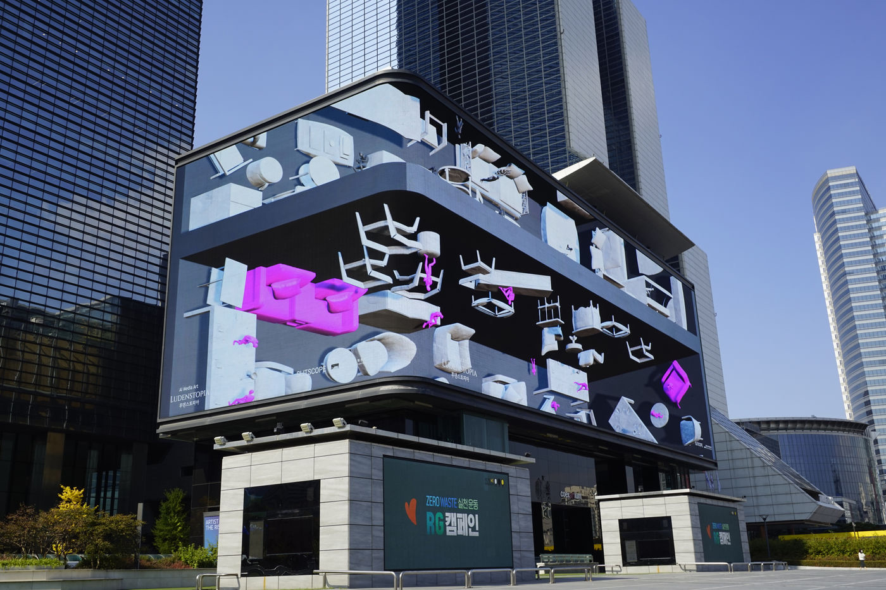
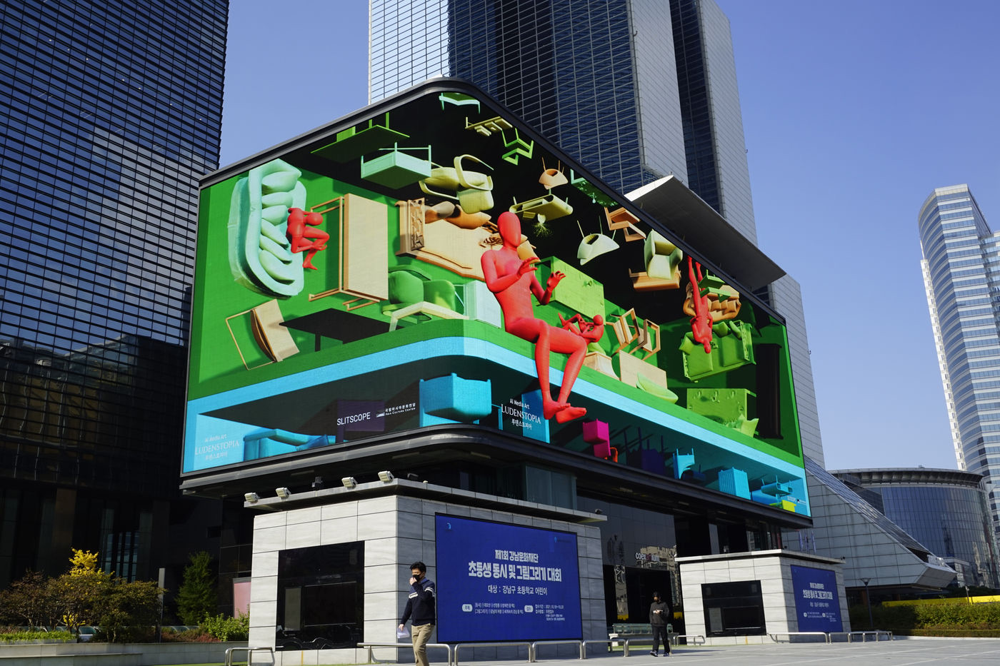
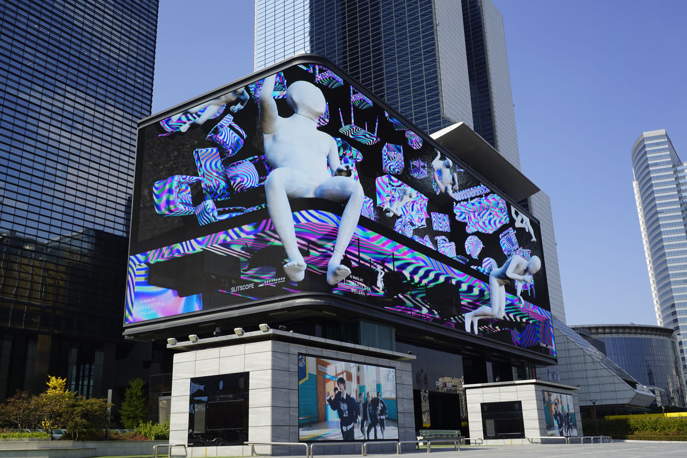
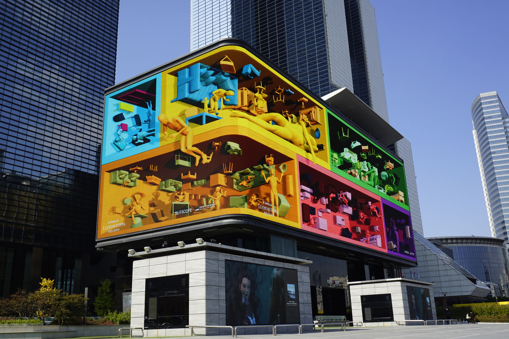

Media Wall Exhibition — 2021
4X4WALLS
코엑스 아티움의 대형 미디어월에서 상영된 Slitscope의 ‘Ludenstopia’.
Slitscope’s ‘Ludenstopia’, screened on the large media wall at Coex Artium.
역사적·사회적·경제적·문화적 함의를 알지 못하는 AI가 이해한 두 개의 공간과, AI가 상상한 제3의 공간을 재배열하는 작업입니다. 개인과 사회, 현실과 상상, 생존과 놀이의 경계가 흐려지며, 우리는 이를 유희적인 세계, ‘루덴스토피아(Ludenstopia)’라 부릅니다. 공간의 가상화와 가상의 공간화를 통해, 20대 학생들의 개인적 공간과 그로부터 해방된 유희적 공간을 동시에 보여줍니다.
The work rearranges two spaces as understood by an AI unaware of their historical, social, economic, and cultural implications, and a third space imagined by the AI. Through the virtualization of space and virtual spatialization, it shows both the personal space of students in their twenties and the playful space liberated from it.
- 작품
- Work
- Ludenstopia (AI, digital media)
- 함께 보기
- Related
- Ludenstopia — full work page
Coex Artium Media, Seoul — 2021


